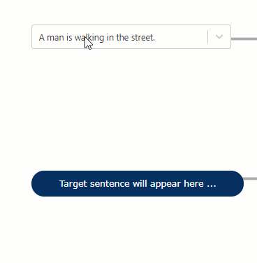
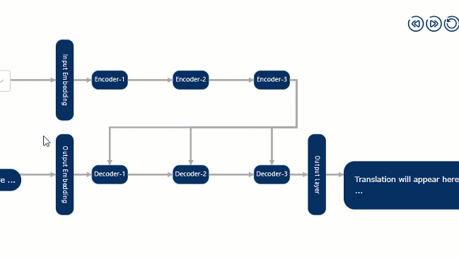
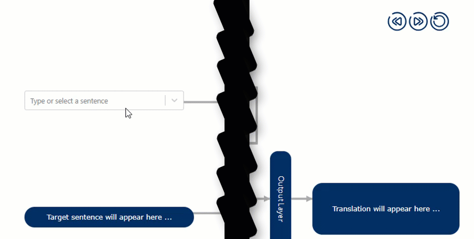

Learn how transformer architecture works for language translation.
Interactive visualization of transformer architecture Icons by SVG Repo .
Introduction
Recent years have seen significant advancements in artificial intelligence, which birthed systems capable of performing
similar to humans in language related tasks. Such advancements were made
possible due to the introduction of the transformer architecture. Before transformer, the language modeling tasks were
performed using different variants of recurrent neural networks(RNNs). However, the inherent structure of RNNs placed
limitations on its expressivity and training speed. As such, these
models failed to learn meaningful concepts for more complex tasks such as language translations. The transformer
architecture lifted these limitations and enabled training models of unprecedented scale and abilities.
Consequently, the research output has increased exponentially.
While this exponential increment in the research output is attractive, maintaining this pace of research becomes challenging
as proportionally equal amount of research debt is added. Such debt lengthens the lead time to meaningful participation
by the aspiring researchers and stilfes further progress. Interactive
visualization has shown great promise in shortening this lead time and facilitating a deeper understanding of the
subject. To this end, this article exposes the inner workings
of the transformer architecture for language translation via an interactive visualization. The seminal encoder-decoder
architecture is chosen as it is often the starting point from
which the newcomers to the language modeling began. The rest of the article details different parts of the visualization.
Using the Visualization
As noted earlier, the exposition in this article refers to the encoder-decoder variant of the transformer architecture.
The technical contents of the visualization assumes familiarity with deep learning concepts. An unfamiliar reader is
urged to review the material listed in the suggested pre-requisites section.
Now, there are three types of visual components in the visualization. Their description are as follows:
Input Selector: The component is located at the top-corner of the architecture. The user can select a component
from the drop-down menu or enter a sentence of their own interest.

Fig. 1 - Input Selection.
Explorable: The explorable components are the ones that can be clicked on to reveal their internal structure.
The subcomponents can be further clicked on to reveal a description of its underlying operations. In total, there are 9
explorable components - input and output embeddings, encoders, decoders, and output layer.

Fig. 2 - Interaction with input embedding component.
Controller: The controller is the unique component that lets the user step through the translation process. Note the target sentence
is one token behind as it is used in conjunction with the encoding of the source sentence, to predict the next token in the sequence.

Fig. 3 - Stepping through the translation using the controller..